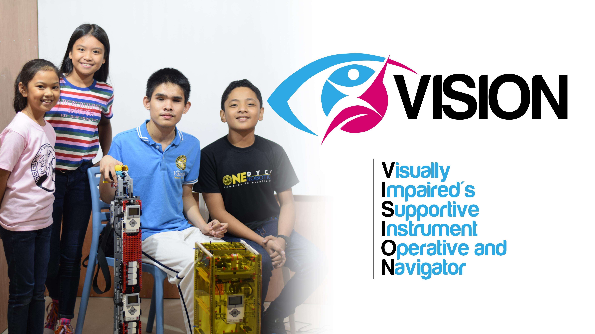
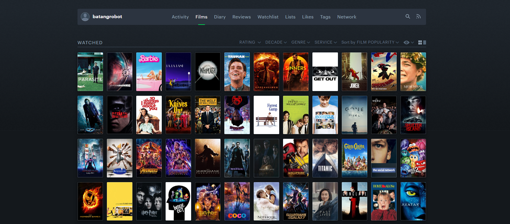
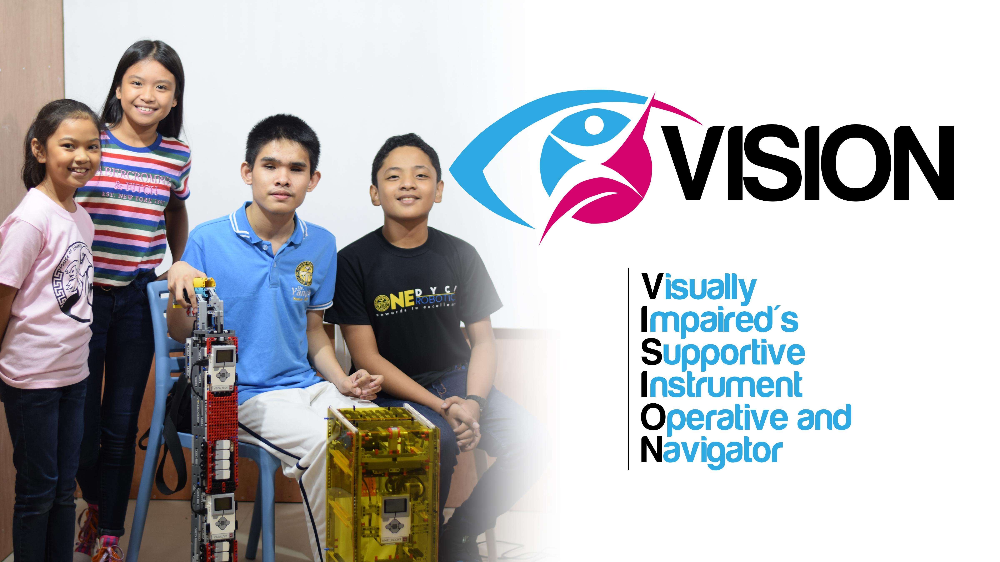
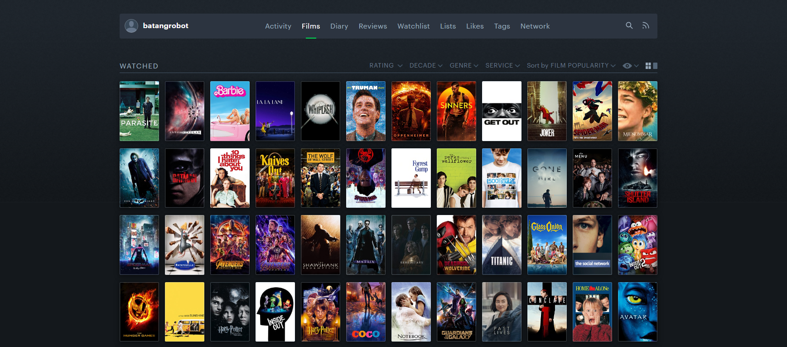
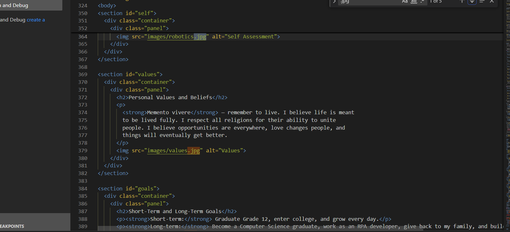
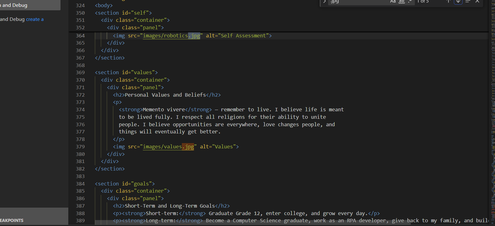
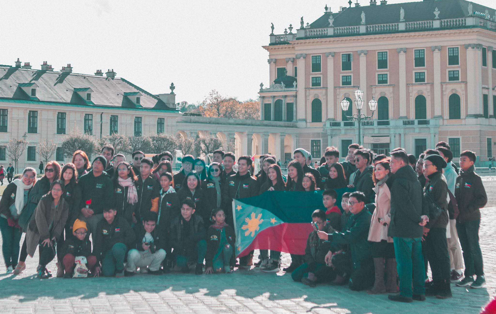
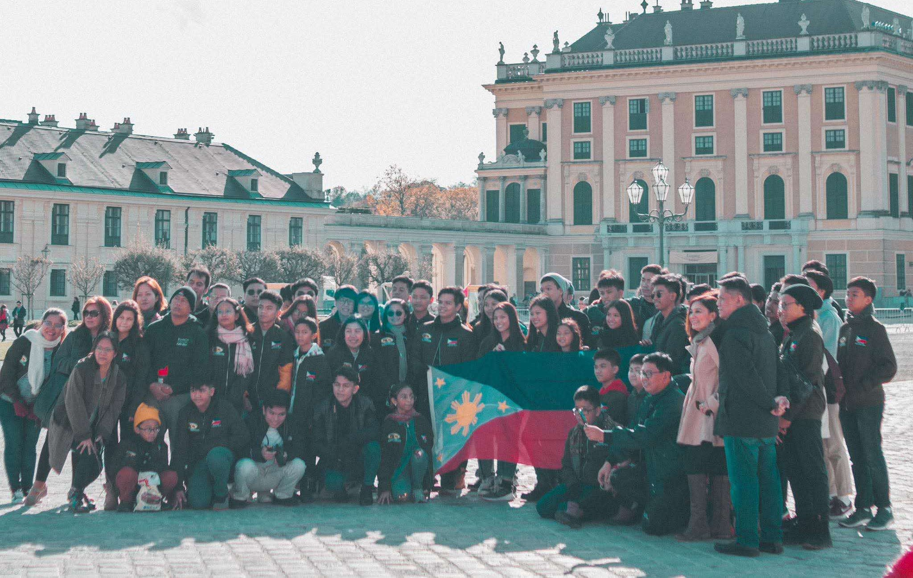
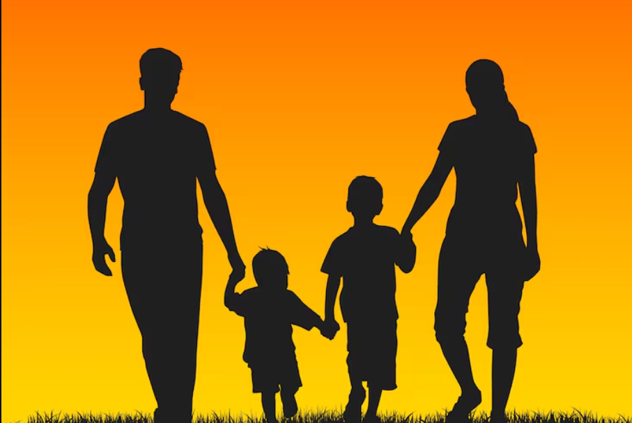
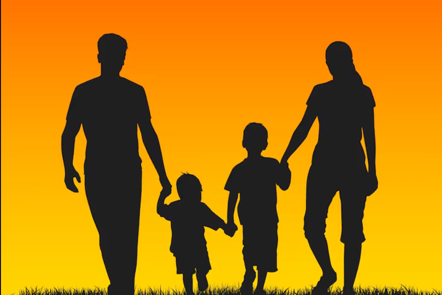

Reflection: How I Want to Grow as a Person
As I continue to grow, I want to become a confident, self-aware, and emotionally intelligent person. I believe that personal growth starts with accepting who I am while still striving to improve. Understanding my strengths and weaknesses helps me make better choices, handle challenges more calmly, and build healthier relationships with the people around me. Confidence, for me, does not mean being perfect, but trusting myself and knowing that I am capable of learning and growing.
Emotionally, I want to be more aware of my feelings and how they affect my actions. By developing emotional intelligence, I hope to respond thoughtfully instead of reacting impulsively, especially during difficult situations. This growth will allow me to communicate better, empathize with others, and maintain balance in my life. Being emotionally grounded is important to me because it helps create peace within myself and with others.
In the future, I see myself becoming a Computer Science graduate and working as an RPA developer. I am drawn to this path because it allows me to create, solve problems, and contribute to real-world solutions through technology. Beyond personal success, one of my biggest goals is to give back to my family. Their support motivates me to work hard, and I want to repay that love by providing stability and security for them.
More than achievements or titles, I want to build a stable and happy future where I genuinely feel alive. I want to live in a place, and a life, where I feel purposeful, fulfilled, and at peace. Growth, for me, is not just about reaching goals but about becoming someone who lives meaningfully, stays true to themselves, and continues to evolve.
 



 


 


 
